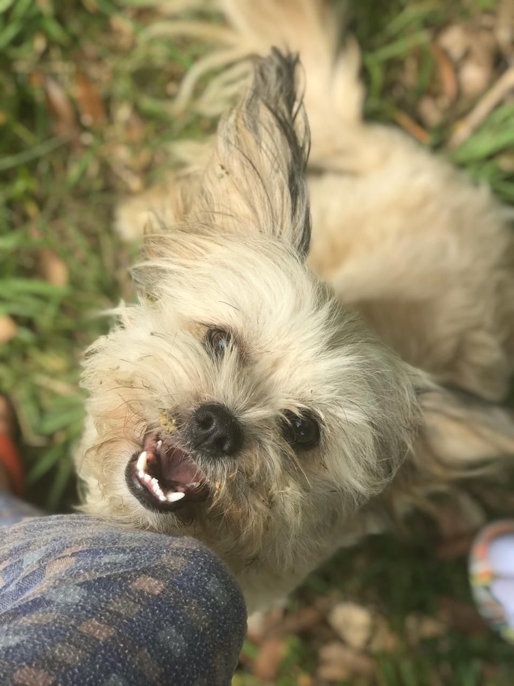
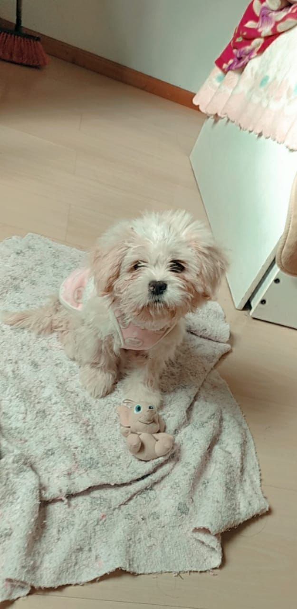

Meu hobby favorito é brincar com minhas filhas de quatro patas
Eu tenho duas cachorrinhas, uma chamada Moana e outra que se chama Frida.
A Moana veio primeiro para mim, lembro até hoje de quando segurei-la em meu colo. Ela era um pouco timida no começo depois se acostumou com sua nova familia.

Moana
Moana tem 2 ano e meio
Ela é da raça Lhasa apso
Ama brincar
Quando era pequena gostava de colo, agora não mais
Gosta de tomar banho
Gosta de andar de carro
É muito companheira
Tem muito pelo, que alias são bem macios
A Frida é filha da Moana, o nome dela foi inspirado na grande artista Frida Kahlo. Ela ainda é pequena!

Frida
Frida tem 5 meses
Ela é da raça Lhasa Apso
Ama colo
Se deixar ela fica o dia todo perto de mim
gosta de brincar com outros cachorros
É muito companheira
Ama dormir na caminha dela no meu quarto
É muito inteligente assim como a mãe
Elas são meu hobby predileto porque?
Primeiro que passo muito tempo no meu quarto estudando, entao sempre que tenho um intervalo, ou quando posso vou para fora, brincar com elas. Corremos juntas, vou ver nossas abelhas sem ferrão e elas também vão, brinco de jogar bolhinhas pra elas irem pegar. Nos divertimos muito!
Quando chegamos em casa, a Frida e a Moana já estão na porta nos esperando, para receberem carinho na barriguinha.
Frida recebendo carinho.
Frida e sua laranja kk
Motivos para ter cachorros:
Eles são uns verdadeiros companheiros. ...
Conviver com cachorro ajuda a fortalecer o sistema imunológico. ...
Facilita o convívio social dos tutores. ..
Eles te fazem rir. ...
Te ensinam a ser alguém melhor
"Antes de ter amado um animal, parte da nossa alma permanece desacordada", Anatole France.
Moana e eu kk Informações sobre a raça Lhasa Apso:
Suas cores são:
Preto, Branco, Mel, Dourado, Marrom, Cor de areia, Cinza Escuro
Personalidade:
Brincalhão, Inteligente, Amigável, Dedicado entre outros.
Altura:
Fêmea: 25–28 cm, Macho: 25–28 cm
Peso:
Fêmea: 5–7 kg, Macho: 6–8 kg
Origem:
Tibete
Curiosidades:
A raça é originária de aldeias e mosteiros do Tibet, foi criada por monges e pela nobreza.
Cão sagrado.
O Lhasa Apso é um sinal de sorte.
Apesar de a expectativa de vida dessa raça ser de 12 a 14 anos, o exemplar mais velho viveu até os 29 anos. Sendo assim também um dos cachorros mais velhos do mundo.